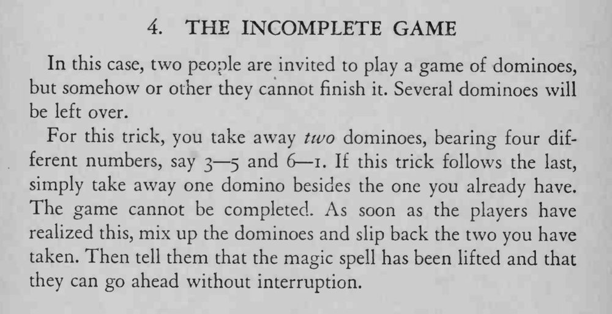

两人用骨牌接龙，怎么也排不完，总会剩几张接不上；等魔术师把牌混一混，他们再玩就顺利排完了。
若这一招接在上一招之后表演，只需再多拿一张牌；放回时要自然，别让人盯着你的手。

In this case, two people are invited to play a game of dominoes, but somehow or other they cannot finish it. Several dominoes will be left over. For this trick, you take away two dominoes, bearing four different numbers, say 3 5 and 6 1. If this trick follows the last, simply take away one domino besides the one you already have. The game cannot be completed. As soon as the players have realized this, mix up the dominoes and slip back the two you have taken. Then tell them that the magic spell has been lifted and that they can go ahead without interruption.